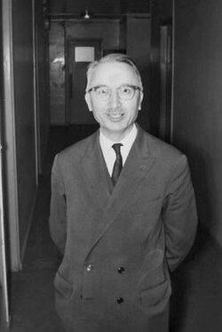
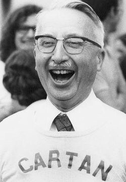

Henri Cartan | |
|---|---|
 Henri Cartan in 1968 | |
| Born | Henri Paul Cartan 8 July 1904 Nancy, Meurthe-et-Moselle, France |
| Died | 13 August 2008 (aged 104) Paris, France |
| Alma mater | École Normale Supérieure |
| Known for | Cartan's theorems A and B Cartan's lemma Cartan–Eilenberg resolution Projective module Steenrod algebra Weak dimension |
| Father | Élie Cartan |
| Relatives | Anna Cartan (aunt), Pierre Weiss (father-in-law) |
| Awards | Peccot Lectures (1932) Émile Picard Medal (1959) |
| Scientific career | |
| Fields | Mathematics |
| Institutions | University of Paris |
| Thesis | Sur les systèmes de fonctions holomorphes à variétés linéaires lacunaires et leurs applications (1928) |
| Paul Montel | |
Doctoral students | Jean-Paul Benzécri Pierre Cartier Jean Cerf Jacques Deny Adrien Douady Pierre Dolbeault Roger Godement Max Karoubi Jean-Louis Koszul Jean-Pierre Ramis Jean-Pierre Serre René Thom B. L. Sharma |
{kind=link}
Henri Paul Cartan (French: [kaʁtɑ̃]; 8 July 1904 – 13 August 2008) was a French mathematician who made substantial contributions to algebraic topology.[1][2][3]
He was the son of the mathematician Élie Cartan, nephew of mathematician Anna Cartan, oldest brother of composer Jean Cartan, physicist Louis Cartan and mathematician Hélène Cartan, and the son-in-law of physicist Pierre Weiss.
Life
According to his own words, Henri Cartan was interested in mathematics at a very young age, without being influenced by his family.[4] He moved to Paris with his family after his father's appointment at Sorbonne in 1909 and he attended secondary school at Lycée Hoche in Versailles.[5][6]
In 1923 he started studying mathematics at École Normale Supérieure, receiving an agrégation in 1926 and a doctorate in 1928.[5][6] His PhD thesis, entitled Sur les systèmes de fonctions holomorphes à variétés linéaires lacunaires et leurs applications, was supervised by Paul Montel.[7]
Cartan taught at Lycée Malherbe in Caen from 1928 to 1929, at the University of Lille from 1929 to 1931 and at the University of Strasbourg from 1931 to 1939. After the German invasion of France the university staff was moved to Clermont Ferrand. He recommended the mathematicians Marie-Hélène Schwartz and Laurent Schwartz move to work at the University of Strasbourg in Clermont Ferrand for both their research and for their safety.[8][9] In 1940 he returned to Paris to work at Université de Paris and École Normale Supérieure.[6] From 1969 until his retirement in 1975 he was professor at Paris-Sud University.[5]
Cartan died on 13 August 2008 at the age of 104. His funeral took place the following Wednesday on 20 August in Die, Drome.[10][11][12]
Honours and awards
In 1932 Cartan was invited to give a Cours Peccot at the Collège de France.[13] In 1950 he was elected president of the Société mathématique de France[14] and from 1967 to 1970 he was president of the International Mathematics Union.[15] He was awarded the Émile Picard Medal in 1959,[16] the CNRS Gold Medal in 1976,[17] and the Wolf Prize in 1980.[18]
He was an invited Speaker at the International Congress of Mathematics in 1932 in Zürich and a Plenary Speaker at the ICM in 1950 in Cambridge, Massachusetts[19] and in 1958 in Edinburgh.[20]
From 1974 until his death he had been a member of the French Academy of Sciences.[21] He was elected a foreign member of many academies and societies,[22][23] including the American Academy of Arts and Sciences (1950),[24] London Mathematical Society (1959),[25] Royal Danish Academy of Sciences and Letters (1962), Palermo National Academy of Science, Letters and Arts (1967),[26] Royal Society of London (1971),[27] Göttingen Academy of Sciences and Humanities (1971),[28] Spanish Royal Academy of Sciences (1971),[29] United States National Academy of Sciences (1972),[30] Bavarian Academy of Science (1974),[31] Royal Academy of Belgium (1978), Japan Academy (1979),[32] Finnish Academy of Science and Letters (1979), Royal Swedish Academy of Sciences (1981), Polish Academy of Sciences (1985) and Russian Academy of Sciences (1999).[33]
He was awarded Honorary Doctorates from Münster (1952),[34] ETH Zürich (1955), Oslo (1961), Sussex (1969), Cambridge (1969),[23] Stockholm (1978), Oxford University (1980),[35] Zaragoza (1985)[36] and Athens (1992).[5]
The French government named him Commandeur des Palmes Académiques in 1964, Officier de la Légion d'honneur in 1965 and Commandeur de l'Ordre du Mérite in 1971.[37]
Political and social activities
During the 70's and the 80's Cartan used his influence to help obtain the release of several dissident mathematicians, including Leonid Plyushch, imprisoned by the Soviet Union, Jose Luis Massera, imprisoned between 1975 and 1984 by the Uruguayan dictatorship, and Sion Assidon, imprisoned during the Moroccan Years of Lead. For his humanitarian efforts, he received in 1989 the Heinz R. Pagels Human Rights of Scientists Award from the New York Academy of Sciences.[4][38][39][40]
Since the 30's Cartan had tight collaborations with many German mathematicians, including Heinrich Behnke and Peter Thullen. Right after World War II he put many efforts to improve the cooperation between French and German mathematicians and restore the flow of exchanges of ideas and students.[40][41]
Cartan supported the idea of European Federalism and from 1974 to 1985 was president of the French section of the Union of European Federalists.[42] At the 1984 European elections he was the leader of the Liste pour les États-Unis d'Europe,[4] which obtained 0.4% of votes and did not elect any candidate.[43]
In 1992 he gave a speech at the first European Congress of Mathematics in Paris, remarking the common heritage and future of European countries and praising the first reunion between mathematicians from the two previously separated parts of Europe.[40]
Research
{kind=link}

Cartan worked in several fields across algebra, geometry and analysis, focusing primarily on algebraic topology and homological algebra.[38][39]
He was a founding member of the Bourbaki group in 1934 and one of its most active participants. After 1945 he started his own seminar in Paris, which deeply influenced Jean-Pierre Serre, Armand Borel, Alexander Grothendieck and Frank Adams, amongst others of the leading lights of the younger generation. The number of his official students was small, but includes Joséphine Guidy Wandja (the first African woman to gain a PhD in mathematics),[44][45] Adrien Douady, Roger Godement, Max Karoubi, Jean-Louis Koszul, Jean-Pierre Serre and René Thom.[7][2]
Cartan's first research interests, until the 40's, were in the theory of functions of several complex variables, which later gave rise to the theory of complex varieties and analytic geometry. Motivated by the solution to the Cousin problems, he worked on sheaf cohomology and coherent sheaves and proved two powerful results, Cartan's theorems A and B.
Since the 50's he became more interested in algebraic topology. Among his major contributions, he worked on cohomology operations and homology of the Eilenberg–MacLane spaces,[46] he introduced the notion of Steenrod algebra,[47] and, together with Jean-Pierre Serre, developed the method of "killing homotopy groups".[48][49] His 1956 book with Samuel Eilenberg on homological algebra[50] was an important text, treating the subject with a moderate level of abstraction with the help of category theory.[51] They introduced fundamental concepts, including those of projective module, weak dimension, and what is now called the Cartan–Eilenberg resolution.
Among his other contributions, in general topology he introduced the notions of filter and ultrafilter[52][53] and in potential theory he developed the fine topology and proved Cartan's lemma. The Cartan model for equivariant cohomology[54] is also named after him.
Selected publications
- Cartan, Henri (1928). "Sur les systèmes de fonctions holomorphes à variétés linéaires lacunaires et leurs applications". Annales Scientifiques de l'École Normale Supérieure. 45: 255–346. doi:10.24033/asens.786.
- Cartan, Henri (1935). Sur les groupes de transformations analytiques. Actualités scientifiques et industrielles vol.198, Exposés mathématiques; IX (in French). Hermann & Cie. p. 55. ISSN 0365-6861. Zbl 0010.39502.
- Cartan, Henri (1940). Sur les classes de fonctions definies par des inégalités portant sur leurs dérivées successives. Actualités scientifiques et industrielles vol.867 (in French). Hermann & Cie. p. 36. ISSN 0365-6861. Zbl 0010.39502.
- Espaces fibrés et homotopie, (Séminaire Henri Cartan Tome 2 (1949–1950))
- Cohomologie des groupes, suite spectrale, faisceaux, (Séminaire Henri Cartan Tome 3 (1950–1951))
- Algèbres d'Eilenberg – Mac Lane et homotopie, (Séminaire Henri Cartan Tome 7 no2. (1954–1955))
- Fonctions automorphes,(Séminaire Henri Cartan Tome 10 no2. (1957–1958))
- Quelques questions de topologie, 1958.
- Homological Algebra (with S. Eilenberg), Princeton Univ Press, 1956 ISBN 978-0-69104991-5[55]
- Séminaires de l'École normale supérieure (called "Séminaires Cartan"), Secr. Math. IHP, 1948–1964; New York, W.A.Benjamin ed., 1967.
- Théorie élémentaire des fonctions analytiques, Paris, Hermann, 1961 (translated into English, German, Japanese, Spanish and Russian).
- Calcul différentiel, Paris, Hermann, 1967 (translated into English, Spanish and Russian).
- Formes différentielles, Paris, Hermann, 1967 (translated into English, Spanish and Russian).
- Differential Forms, Dover 2006
- Œuvres — Collected Works, 3 vols., ed. Reinhold Remmert & Jean-Pierre Serre, Springer Verlag, Heidelberg, 1967.
- Cartan, Henri (6 July 2015). Oeuvres - Collected Works I. Springer. ISBN 978-3-662-46872-2.
- Cartan, Henri (23 September 2015). Oeuvres - Collected Works II. Springer. ISBN 978-3-662-46908-8.
- Cartan, Henri (23 September 2015). Oeuvres - Collected Works III. Springer. ISBN 978-3-662-46911-8.
- Relations d'ordre en théorie des permutations des ensembles finis, Neuchâtel, 1973.
- Théorie élémentaire des fonctions analytiques d'une ou plusieurs variables complexes, Paris, Hermann, 1975. ISBN 9782705652159
- Cartan, Henri (1992). Elementary Theory of Analytic Functions of One or Several Complex Variables. Courier Corporation. p. 228. ISBN 9780486318677.
- Cours de calcul différentiel, Paris, Hermann, 1977.
- Audin, Michèle, ed. (2011). Correspondance entre Henri Cartan et André Weil, 1928–1991. Société mathématique de France. p. xiv+720. ISBN 978-2-85629-314-0. ISSN 1629-4939..[56]
See also
References
- ^ Augereau, Jean-François (19 August 2008). "Henri Cartan, mathématicien" [Henri Cartan, mathematician]. Le Monde (in French). Retrieved 16 April 2022.
- ^ a b "Communiqué de presse pour le centenaire d'Henri Cartan (2004)" [Press communication for the centenary of Henri Cartan (2004)] (PDF). Académie des Sciences (in French). 8 June 2004. Archived from the original (PDF) on 17 August 2022. Retrieved 19 April 2022.
- ^ Weil, Martin (31 August 2008). "Noted French mathematician and teacher". Los Angeles Times. Retrieved 25 April 2022.
- ^ a b c Jackson, Allyn (1999). "Interview with Henri Cartan" (PDF). Notices of the American Mathematical Society. 46 (7): 782–788.
- ^ a b c d O'Connor, John J.; Robertson, Edmund F., "Henri Cartan", MacTutor History of Mathematics Archive, University of St Andrews
- ^ a b c "Henri Cartan: mathematician". The Times. 2008. ISSN 0140-0460. Retrieved 18 April 2022. available also at "Henri Cartan – Times obituary". MacTutor History of Mathematics archive. Retrieved 18 April 2022.
- ^ a b Henri Cartan at the Mathematics Genealogy Project
- ^ "Marie-Hélène Schwartz - Biography". Maths History. Retrieved 7 June 2026.
- ^ "Laurent Schwartz - Biography". Maths History. Retrieved 7 June 2026.
- ^ "Décès du mathématicien français Henri Cartan" [Death of French mathematician Henri Cartan]. L'Obs (in French). 18 August 2008. Retrieved 18 April 2022.
- ^ Chang, Kenneth (25 August 2008). "Henri Cartan, French Mathematician, Is Dead at 104". The New York Times. ISSN 0362-4331. Retrieved 16 April 2022.
- ^ "Décès d'Henri Cartan, mathématicien français" [Decease of Henri Cartan, French mathematician] (in French). France 24. 18 August 2008. Retrieved 25 April 2022.
- ^ "Liste chronologique des cours Peccot avec les intitulés depuis 1899" [Chronological list of the Peccot lectures with titles since 1899] (PDF). Collège de France (in French).
- ^ "Les présidents de la SMF depuis 1873" [The presidents of the SMF since 1873]. Société Mathématique de France (in French). Retrieved 16 April 2022.
- ^ "IMU Executive Committee". International Mathematical Union. Retrieved 16 April 2022.
- ^ "Médaille Émile Picard (Mathématique)" [Émile Picard Medal (Mathematics)] (PDF). Académie des sciences (in French).
- ^ "Henri Cartan". French National Centre for Scientific Research (in French). December 1976. Retrieved 16 April 2022.
- ^ "Henri Cartan". Wolf Foundation. 9 December 2018. Archived from the original on 16 May 2022. Retrieved 16 April 2022.
- ^ Cartan, Henri. "Problèmes globaux dans la théorie des fonctions analytiques de plusieurs variables complexes." Archived 28 December 2013 at the Wayback Machine In Proc. Int. Cong. Math, vol. 1, pp. 152–164. 1950.
- ^ Cartan, Henri. "Sur les fonctions de plusieurs variables complexes. Les espaces analytiques." Archived 28 December 2013 at the Wayback Machine In Proc. Intern. Congress Mathematicians Edinburgh, pp. 33–52. 1958.
- ^ "Henri Cartan – Les Membres de l'Académie des sciences" [Henri Cartan – The members of the Académie des sciences]. Académie des Sciences (in French). Retrieved 18 April 2022.
- ^ "Henri Cartan". Institute for Advanced Study. 9 December 2019. Retrieved 18 April 2022.
- ^ a b "Notices sur les travaux scientifiques de Henri Cartan" (PDF). Academie de Sciences. 1973.
- ^ "Henri Paul Cartan". American Academy of Arts and Sciences. Retrieved 24 April 2022.
- ^ "London Mathematical Society Honorary Members" (PDF). London Mathematical Society. Retrieved 24 April 2022.
- ^ "Storia – Accademia Nazionale Scienze, Lettere, Arti" [History – National Academy Science, Letters, Arts]. ansla.it (in Italian). Retrieved 24 April 2022.
- ^ "Cartan, Henri: certificate of election to the Royal Society". Royal Society of London. Retrieved 24 April 2022.
- ^ "Mitglieder: Henri Cartan" [Member: Henri Cartan]. Göttingen Academy of Sciences and Humanities (in German). Retrieved 24 April 2022.
- ^ "Relación de académicos desde el año 1847 hasta el 2003" [List of academics from 1847 to 2003] (PDF). Real Academia de Ciencias Exactas, Físicas y Naturales (in Spanish). 2003.
- ^ "Henri P. Cartan". National Academy of Sciences. Retrieved 24 April 2022.
- ^ "Verstorbene Mitglieder – Prof. Dr. Henri Cartan" [Deceased member – Prof. Dr. Henri Cartan]. Bavarian Academy of Science (in German). Retrieved 24 April 2022.
- ^ "Deceased Honorary Members (Alphabetical Order)". The Japan Academy. Retrieved 24 April 2022.
- ^ "Картан А.. – Общая информация". ras.ru (in Russian). Retrieved 24 April 2022.
- ^ "Honory [sic] Doctors of the Faculty of Mathematics and Computer Science". Münster University. Retrieved 24 April 2022.
- ^ Griffith, J. G. (1981). "Eulogy: Henri Cartan". Bulletin of the London Mathematical Society. 13 (3): 263–264. doi:10.1112/blms/13.3.263.
- ^ "Henri Cartan | Honoris causa | Universidad de Zaragoza". Universidad de Zaragoza (in Spanish). Retrieved 24 April 2022.
- ^ "Décret du 13 mai 1996" [Decree of 13 May 1996]. Légifrance (in French). 1996. Retrieved 24 April 2022.
- ^ a b Serre, Jean-Pierre (2009). "Henri Paul Cartan. 8 July 1904 – 13 August 2008". Biographical Memoirs of Fellows of the Royal Society. 55: 37–44. doi:10.1098/rsbm.2009.0005.
- ^ a b Serre, Jean-Pierre (2014). "Obituary: Henri Cartan 1904-2008". Bulletin of the London Mathematical Society. 46 (1): 211–216. doi:10.1112/blms/bdt079.
- ^ a b c Bourguignon, Jean-Pierre; Hirzebruch, Friedrich; Remmert, Reinhold (2010). "Cartan, Europe, and Human Rights" (PDF). Notices of the AMS. 57 (8). American Mathematical Society: 972–975.
- ^ Ziegler, Günter (2009). "Der französische Freund" [The French friend]. Die Zeit (in German). Retrieved 27 November 2025.
- ^ "Archives de l'UEF-France et mémoire du fédéralisme" [Archives of the UEF-France and memories of federalism]. uef.fr (in French). 31 October 2015. Retrieved 25 April 2022.
- ^ Mabille, Xavier (1984). "Les résultats des élections européennes de juin 1984" [The results of the European elections of June 1984]. Courrier Hebdomadaire du CRISP (in French). 1043 (18): 1–31. doi:10.3917/cris.1043.0001. ISSN 0008-9664.
- ^ "Joséphine Guidy-Wandja". International Mathematical Union. Retrieved 25 March 2023.
- ^ Cassiau-Haurie, Christophe (20 February 2008). "Les femmes peinent à percer les bulles" [Women struggle to break through bubbles]. Africultures (in French). Retrieved 25 March 2023.
- ^ "Séminaire Henri Cartan, Tome 7" [Seminar Henri Cartan]. numdam.org (in French). 1954–1955. Archived from the original on 25 April 2022. Retrieved 25 April 2022.
- ^ Cartan, Henri (1955). "Sur l'itération des opérations de Steenrod" [On the iteration of Steenrod operations]. Commentarii Mathematici Helvetici (in French). 29 (1): 40–58. doi:10.1007/BF02564270. ISSN 0010-2571. S2CID 124558011.
- ^ Cartan, Henri; Serre, Jean-Pierre (1952a). "Espaces fibrés et groupes d'homotopie. I. Constructions générales". Comptes Rendus de l'Académie des Sciences, Série I. 234. Paris: 288–290. ISSN 0764-4442. MR 0046045.
- ^ Cartan, Henri; Serre, Jean-Pierre (1952b). "Espaces fibrés et groupes d'homotopie. II. Applications". Comptes Rendus de l'Académie des Sciences, Série I. 234. Paris: 393–395. ISSN 0764-4442. MR 0046046.
- ^ Cartan, Henri; Eilenberg, Samuel (1956). Homological Algebra. Princeton University Press. ISBN 0691049912.
- ^ Mac Lane, Saunders (1956). "Review: Homological algebra, by Henri Cartan and Samuel Eilenberg". Bull. Amer. Math. Soc. 62 (6): 615–624. doi:10.1090/S0002-9904-1956-10082-7.
- ^ Cartan, Henri (1937). "Théorie des filtres" [Theory of filters]. Comptes Rendus de l'Académie des Sciences (in French). 205: 595–598.
- ^ Cartan, Henri (1937). "Filtres et ultrafiltres" [Filters and ultrafilters]. Comptes Rendus de l'Académie des Sciences (in French). 205: 777–779.
- ^ Cartan, Henri (1950). "La transgression dans un groupe de Lie et dans un espace fibré principal" [Transgression in a Lie group and in a principal fibre bundle]. Colloque de topologie (Espaces fibrés). Bruxelles (in French): 57–71. Zbl 0045.30701.
- ^ Mac Lane, Saunders (1956). "Review: Homological algebra, by Henri Cartan and Samuel Eilenberg". Bull. Amer. Math. Soc. 62 (6): 615–624. doi:10.1090/S0002-9904-1956-10082-7.
- ^ Fresán, Javier (June 2012). "Review: Correspondance entre Henri Cartan et André Weil ed. by Michèle Audin" (PDF). EMS Newsletter. pp. 58–60. Archived from the original (PDF) on 19 May 2020. Retrieved 22 June 2016.
External links
 Media related to Henri Cartan at Wikimedia Commons
Media related to Henri Cartan at Wikimedia Commons
- Henri Cartan at IMDb
- Illusie, Luc; Cartier, Pierre (ed.), Dossier. Notices of the American Mathematical Society, Sept. 2010, vol. 57, issue 8
- Biographical sketch and bibliography by the Société Mathématique de France on the occasion of Cartan's 100th birthday. (in French)
- Cerf, Jean (April 2004), "Trois quarts de siècle avec Henri Cartan" (PDF), Gazette des Mathématiciens (in French) (100): 7–8, archived from the original (PDF) on 9 September 2008
- Samuel, Pierre (April 2004), "Souvenirs personnels sur H. Cartan" (PDF), Gazette des Mathématiciens (in French) (100): 13–15, archived from the original (PDF) on 9 September 2008
- "100th Birthday of Henri Cartan" (PDF), European Mathematical Society Newsletter (53): 20–21, September 2004 (translations of above two articles from the SMF Gazette)
- Papers by Henri Cartan as member of the 'Association européenne des enseignants' (AEDE) and the 'Mouvement fédéraliste européen' (MFE) are at the Historical Archives of the EU in Florence